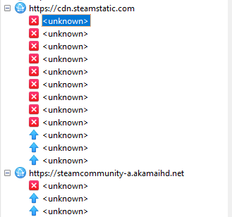
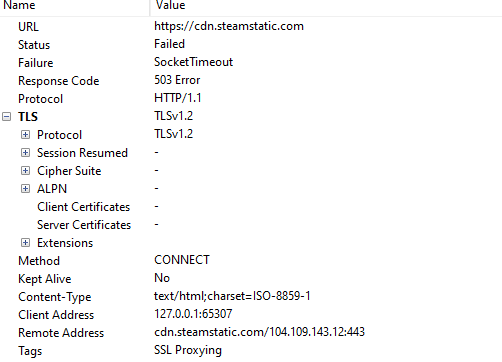
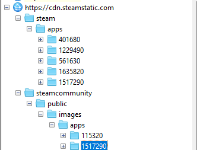

| Ник | Пост | Дата |
|---|---|---|
| nonenamec |
Описание проблемыСобственно при открытии десктопного приложения стим, если включен антизапрет в последние время наблюдается проблема, когда адреса в частности https://steamcommunity-a.akamaihd.net и https://cdn.steamstatic.com полностью не работают отдавая 503 SocketTimeout из-за чего у нас перестают грузиться любые картинки в частности превью-изображения достижений игр, скриншоты друзей в центре активности а так же лента что нового в библиотеке пользователя. А сам сайт в браузере по адресу Добро пожаловать в Steam (steampowered.com) когда работает антизапрет просто не грузит С включенным атизапретом Спойлер Спойлер Антизапрет выключен Спойлер | 2023-11-04T06:55:16.277Z |
| bunkerfox(bunkerfox) | Это не только со стимом проблема, а всего что cdn использует этот и да, проблема местами проявляется, но если использовать dns провайдера и без антизапрета, то эти сервисы доступны становятся, так как выделяется другой подсеть от cdn | 2023-11-04T09:08:43.121Z |
| dartraiden(Alexander Gavrilov) | 2023-11-05T11:50:48.323Z | |
| ValdikSS | 2023-11-08T23:40:55.555Z | |
| d3nisov(Alexey) | Тоже вылезла эта проблема, в Steam не грузятся изображения, в Counter-Strike 2 не грузятся кастомные аватарки игроков (при этом стимовские грузятся). Есть надежды на фикс проблемы? | 2023-11-15T17:58:39.552Z |
| ValdikSS |
Конечно, для этого нужно вам обратиться в поддержку к вашему провайдеру, передав недоступный IP-адрес, после чего они составят заявку в ДЦОА. Иных способов нет. | 2023-11-16T15:46:21.475Z |
| d3nisov(Alexey) | поддержка провайдера скажет отключайте антизапрет, раз у вас без него всё работает, если это на полном серьёзе предложено вами конечно)) | 2023-11-16T16:02:07.377Z |
| ValdikSS | Не нужно упоминать сервис. Наверняка у вас будет та же проблема при использовании сторонних DNS-резолверов, вроде | 2023-11-16T16:13:31.789Z |
| nonenamec | Им бесполезно это объяснять,они никакие заявки не заводят.Есть еще варианты, кроме того что убирать антизапрет с роутера и просто ставить браузерное расширение? | 2023-11-19T07:13:01.766Z |
| dartraiden(Alexander Gavrilov) | Сменить провайдера, например. Мой прошлый провайдер вообще рубил все HTTPS-соединения к IP-адресам, в который резолвились домены из реестра. Как результат, куча ресурсов за Cloudflare была недоступна. Поменял провайдера, стало легче. Либо завернуть весь трафик в зарубежный VPN (учитывая при этом, что популярные протоколы в России блокируют) | 2023-11-19T12:23:12.432Z |